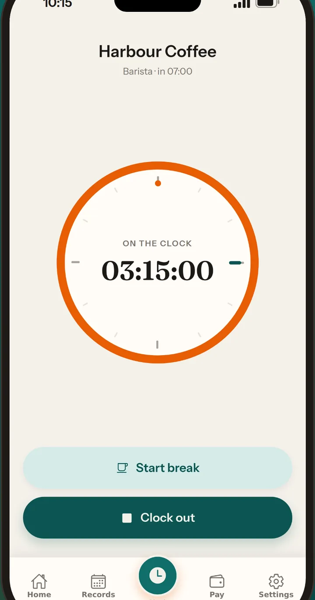

Miễn phí
Miễn phí
- 2 công việc đang dùng
- 1 mẫu ca
- Chấm công, Ghi chép và Lương
- Xuất CSV
- Nhắc nhở, tiện ích và Hoạt động trực tiếp
- Tệp sao lưu, hoặc iCloud tùy chọn
Cho công việc tính theo giờ
Chấm công, ghi từng công việc và xem ước tính số tiền thực nhận.

Một lần chạm cho ca hôm nay. Giờ nghỉ sẽ tạm dừng đồng hồ. Ca qua đêm được tính, và bạn có thể sửa giờ trước khi lưu.
Xem một tuần, một tháng hoặc một chu kỳ lương. Nhiều hơn một công việc có thể nằm trong cùng một màn hình.
Trước là lương gộp, sau đó là thuế và các khoản khấu trừ khác mà bạn đặt cho từng công việc. Ở Vương quốc Anh và Đảo Man, đó có thể là con số minh họa của PAYE hoặc ITIP. Ở nơi khác, bạn tự nhập phần trăm. Đây là ước tính, không phải phiếu lương.
Mỗi công việc có mức lương, tăng ca, tiền nghỉ phép và chu kỳ lương riêng. Lưu một ca thành mẫu. Gói miễn phí gồm 2 công việc đang dùng và 1 mẫu.
Một lời nhắc trước ca, và nếu muốn thì một nhắc nhở khi bạn tới nơi làm đã lưu. Tiện ích Màn hình chính cho biết việc tiếp theo. Hoạt động trực tiếp giữ nguyên khi bạn đang chấm công vào.
Công việc, ca và lương ở trên iPhone. Xuất một tệp sao lưu hoặc một CSV, hoặc bật một bản sao tùy chọn trong iCloud của chính bạn.



Miễn phí
Theo tháng
hoặc theo năm, với 1 tháng miễn phí cho người đăng ký mới. App Store hiển thị giá ở quốc gia của bạn. Khi giá năm thấp hơn mười hai tháng, màn hình đăng ký cho biết bạn tiết kiệm được bao nhiêu.
Gói theo tháng không có dùng thử miễn phí. Tháng miễn phí của gói năm chuyển sang giá năm, trừ khi bạn hủy ít nhất 24 giờ trước khi tháng đó kết thúc. Apple tính phí gói đăng ký. Giá trên nút đăng ký lấy từ App Store. Số tiền lương trong ứng dụng là ước tính, không phải phiếu lương.
Mở Graft, đăng nhập, rồi vào Cài đặt → Tài khoản. Gói theo tháng không có dùng thử miễn phí. Gói theo năm là một tháng miễn phí cho người đăng ký mới, sau đó là giá năm. Gói bạn chọn hiển thị giá từ App Store, cùng với Đăng ký và Khôi phục giao dịch.
Trên cùng iPhone với Apple ID đã mua Premium, hãy mở Cài đặt → Tài khoản → Khôi phục giao dịch. Việc khôi phục gắn Premium vào tài khoản Graft mà bạn đang đăng nhập.
Graft không thể hủy gói đăng ký của Apple từ trong ứng dụng. Apple tính phí và Apple hủy.
Tháng miễn phí của gói năm chuyển sang giá năm, trừ khi bạn hủy ít nhất 24 giờ trước khi thời gian dùng thử kết thúc. Sau đó, và với gói tháng, hãy hủy ít nhất 24 giờ trước khi kỳ kết thúc để dừng lần gia hạn kế tiếp. Premium vẫn dùng được cho đến khi thời gian bạn đã có kết thúc. Xóa ứng dụng, hoặc xóa tài khoản Graft, không hủy gói đăng ký.
Thanh toán, gia hạn và hoàn tiền do Apple xử lý theo Thỏa thuận cấp phép người dùng cuối cho ứng dụng được cấp phép của Apple.
Các con số của Graft là ước tính, không phải phiếu lương. Ứng dụng không biết mã thuế, khoản vay sinh viên, hay mọi khoản khấu trừ mà người sử dụng lao động áp dụng. Hãy đối chiếu ước tính với phiếu lương. Phiếu lương là căn cứ.
Công việc, ca và lương ở trên iPhone. Việc đăng nhập (tên và email) do Clerk xử lý. Bản sao lưu iCloud, nếu bạn bật, đi vào tài khoản iCloud của chính bạn. Xem Chính sách quyền riêng tư.
Hủy trong cài đặt tài khoản App Store, ít nhất 24 giờ trước khi thời gian dùng thử hoặc kỳ trả phí kết thúc. Các bước nằm trong Gói đăng ký. Xóa Graft không hủy gói đăng ký.
Gửi email tới GraftSupport@proton.me. Ghi phiên bản iOS và điều bạn kỳ vọng sẽ xảy ra.
Câu hỏi về quyền riêng tư có thể dùng cùng địa chỉ. Chính sách quyền riêng tư và Điều khoản sử dụng mô tả những gì ứng dụng làm hôm nay.